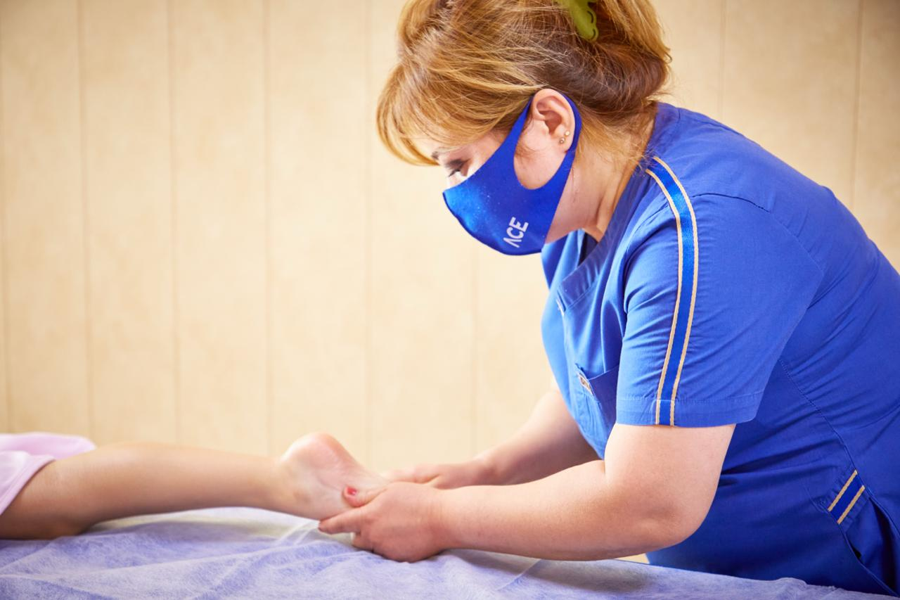

Показания к лечению
Комплексная реабилитация и поддержка здоровья
Мы подбираем санаторные программы для пациентов с заболеваниями почек, обмена веществ, органов пищеварения и сопутствующих состояний.
Лечение в Zam-Zam
Глубокая диагностика и личный план терапии
В санатории «Zangiota Zam-Zam» лечение и реабилитация строятся на трёх китах: квалифицированная диагностика, природные ресурсы и постоянный контроль врачей. Каждый план терапии формируется после консультации профильных специалистов.

Основные направления
Что мы лечим в санатории
Ниже представлены ключевые профили заболеваний, с которыми мы работаем. При необходимости мы дополнительно адаптируем программу под сопутствующие диагнозы.
Почки и мочевыводящие пути
Лечение воспалительных процессов, профилактика камнеобразования и восстановление после операций.
- хронический пиелонефрит
- остаточные явления перенесённого острого пиелонефрита
- мочекаменная болезнь
- состояние после удаления камней хирургическим, инструментальным или аппаратным способом
- хронический простатит и цистит
Обмен веществ и эндокринология
Комплексное сопровождение метаболических нарушений с акцентом на питание и водолечение.
- сахарный диабет
- мочевые диатезы
- ожирение
- метаболический синдром и последствия гиподинамии
Органы пищеварения
Восстановление функций ЖКТ с помощью диетотерапии, минеральной воды и физиопроцедур.
- эзофагиты и хронические гастриты
- функциональные расстройства желчного пузыря и желчевыводящих путей
- желчекаменная болезнь
- хронические гепатиты и панкреатиты
- хронические энтероколиты и колиты
- дисбактериоз и функциональные нарушения кишечника
- послеоперационные состояния органов пищеварения
Сопутствующие состояния
Помогаем стабилизировать хронические заболевания, влияющие на качество жизни.
- Опорно-двигательный аппарат: остеохондроз, деформирующий остеоартроз, обменные полиартриты, посттравматические артриты, заболевания позвоночника.
- Сердечно-сосудистая система: вегето-сосудистая дистония, кардионеврозы, функциональные нарушения.
- Периферическая нервная система: невриты, невралгии, корешковые синдромы, радикулиты.
- Гинекология: хронические воспалительные процессы органов малого таза.
- Бронхо-легочная система: хронические бронхиты, фарингиты и другие воспалительные заболевания дыхательных путей.
Не нашли своё заболевание?
Свяжитесь с нашим медицинским отделом — мы подскажем, возможно ли санаторное лечение и предложим альтернативные программы.